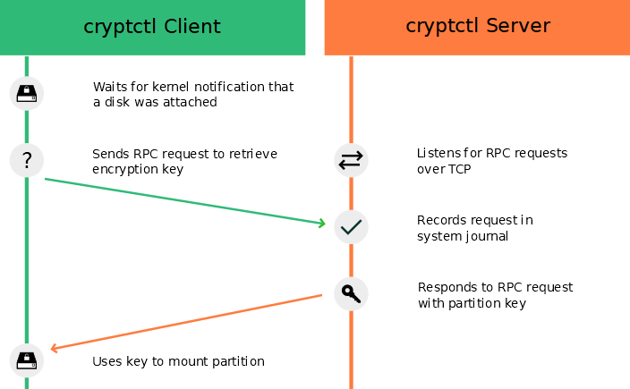

Chapter 13. Storage encryption for hosted applications with cryptctl
Databases and similar applications are often hosted on external servers that are serviced by third-party staff. Certain data center maintenance tasks require third-party staff to directly access affected systems. In such cases, privacy requirements necessitate disk encryption.
cryptctl allows encrypting sensitive directories using LUKS and offers the following additional
features:
-
Encryption keys are located on a central server, which can be located on customer premises.
-
Encrypted partitions are automatically remounted after an unplanned reboot.
cryptctl consists of two components:
-
A client is a machine that has one or more encrypted partitions but does not permanently store the necessary key to decrypt those partitions. For example, clients can be cloud or otherwise hosted machines.
-
The server holds encryption keys that can be requested by clients to unlock encrypted partitions.
You can also set up the
cryptctlserver to store encryption keys on a KMIP 1.3-compatible (Key Management Interoperability Protocol) server. In that case, thecryptctlserver does not store the encryption keys of clients and is dependent upon the KMIP-compatible server to provide these.
cryptctl Server maintenanceSince the cryptctl server manages timeouts for the encrypted disks and, depending on the configuration,
can also hold encryption keys, it should be under your direct control and managed
by trusted personnel.
Additionally, it should be backed up regularly. Losing the server's data means losing access to encrypted partitions on the clients.
To handle encryption, cryptctl uses LUKS with aes-xts-256 encryption and 512-bit keys. Encryption keys are transferred
using TLS with certificate verification.

cryptctl (model without connection to KMIP server)cryptctl
Before continuing, make sure the package cryptctl is installed on all machines you intend to set up as servers or clients.
13.1. Setting up a cryptctl server
Before you can define a machine as a cryptctl client, you need to set up a machine as a cryptctl server.
Before beginning, choose whether to use a self-signed certificate to secure communication between the server and clients. If not, generate a TLS certificate for the server and have it signed by a certificate authority.
Additionally, you can have clients authenticate to the server using certificates signed by a certificate authority. To use this extra security measure, make sure to have a CA certificate at hand before starting this procedure.
-
As
root, run:#cryptctl init-server -
Answer each of the following prompts and press ↵ after every answer. If there is a default answer, it is shown in square brackets at the end of the prompt.
-
Create a strong password, and protect it well. This password unlocks all partitions that are registered on the server.
-
Specify the path to a PEM-encoded TLS certificate or certificate chain file or leave the field empty to create a self-signed certificate. If you specify a path, use an absolute path.
-
If you want the server to be identified by a host name other than the default shown, specify a host name.
cryptctlgenerates certificates which include the host name. -
Specify the IP address that belongs to the network interface that you want to listen on for decryption requests from the clients, then set a port number (the default is port 3737).
The default IP address setting,
0.0.0.0means thatcryptctllistens on all network interfaces for client requests using IPv4. -
Specify a directory on the server that holds the decryption keys for clients.
-
Specify whether clients need to authenticate to the server using a TLS certificate. If you choose , this means that clients authenticate using disk UUIDs. (However, communication is encrypted using the server certificate in any case.)
If you choose , pick a PEM-encoded certificate authority to use for signing client certificates.
-
Specify whether to use a KMIP 1.3-compatible server (or multiple such servers) to store encryption keys of clients. If you choose this option, provide the host names and ports for one or multiple KMIP-compatible servers.
Additionally, provide a user name, password, a CA certificate for the KMIP server, and a client identity certificate for the
cryptctlserver.☝No easy reconfiguration of KMIP settingThe setting to use a KMIP server cannot easily be changed later. To change this setting, both the
cryptctlserver and its clients need to be configured afresh. -
Finally, configure an SMTP server for e-mail notifications for encryption and decryption requests or leave the prompt empty to skip setting up e-mail notifications.
ⓘPassword-protected serverscryptctlcurrently cannot send e-mail using authentication-protected SMTP servers. If that is necessary, set up a local SMTP proxy. -
When asked whether to start the
cryptctlserver, entery.
-
-
To check the status of the service
cryptctl-server, use:#systemctl status cryptctl-server
To reconfigure the server later, do either of the following:
-
Run the command
cryptctl init-serveragain.cryptctlproposes the existing settings as the defaults, so that you only need to specify the values that you want to change. -
Make changes directly in the configuration file
/etc/sysconfig/cryptctl-server.However, to avoid issues, do not change the settings
AUTH_PASSWORD_HASHandAUTH_PASSWORD_SALTmanually. The values of these options need to be calculated correctly.